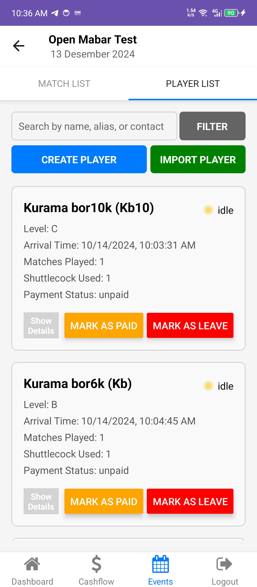

Illustration & Scope of Functionalities
BadminHub offers three core functionalities:
- Player Attendance Management
- Player Pairing (for double matches)
- Financial Flow Management
Below are some visual representations of the app's functionalities:
BadminHub offers three core functionalities:
1. Player Attendance Management
-
Login and Registration: Users can log in with credentials provided by the app. If they are not registered, they can sign up via the form link on the login screen.
-
Dashboard: After logging in, users are directed to the dashboard. New users can add players either through the 'create player' feature or the 'import player' feature.
-
Create Player: Add individual player details.

-
Import Player: Import a list of players into the system.
-
-
Events: Users can access their badminton events via the 'Events' section in the bottom navigation. If there are no events, users can create new ones using the 'add event' feature.
-
Event Days and Players: Users can view daily events and player data by navigating to the two tabs—'event days' and 'event players'—within an event.
-
Match and Player List: Users can manage player attendance and track match details through the 'match list' and 'player list' tabs.
Player Attendance Features:
- Mark player attendance through the 'apply player' feature.
- View player details such as name, level, status (idle, playing, leave), arrival time, number of matches played, shuttlecocks used, payment status, and demographic information.
- Update player status by adding them to a match, marking them as 'leave', or ending their session.
- Filter players by level, matches played, payment status, gender, and age range.
- Search for players by name, alias, or contact number.
2. Player Pairing (for double matches)
The second core feature is focused on Player Pairing for badminton doubles matches. The main screens related to this feature are the 'Player List' screen and the 'Match List' screen.
-
On the 'Player List' screen, users can view all players participating in the open badminton session for that day. Users can also filter players based on the following attributes:
- Player Level: “A+”, “A”, “B+”, “B”, “C+”, “C”
- Player Status: “Idle,” “Playing,” “Leave,” “In-Draft”
- Number of Matches Played
- Payment Status: “Paid,” “Unpaid”
- Gender: “Male,” “Female”
-
After reviewing the players' conditions and data, users can navigate to the 'Match List' screen and initiate player pairing by clicking the 'add match' button.
-
Next, users will proceed to the 'Add New Match' screen, where they can start pairing players by entering the following attributes:
- Court: Select from available courts at the venue.
- Player: Only players with an “idle” status are shown.
- Note: An optional field for additional comments. Users can select players either by picking them directly or by searching for them.
-
Once the necessary attributes are filled in, users can decide whether to start the match immediately or save it as a draft.
-
Users can view the arranged matches and their statuses on the 'Match List' screen. Users also can search the match based on the player name/ alias
-
Additionally, users can see each player's status (whether they are playing or not) on the 'Player List' screen.
-
If a user chooses to save a match as a draft, its status will be ‘draft.’ Users can change the match status to ‘playing’ by pressing the 'start match' button.
-
When a match concludes, users can end it by pressing the 'end match' button, which will generate an “end time” attribute, allowing users to view the overall details and information related to the match.

3. Financial Flow Management
In this feature, users can manage financial flows by tracking each badminton activity or by manually adding cash flow items.
- Essentially, every badminton event related to finances is automatically handled and added to the cash flow (configured on the backend). These events include adding or modifying player memberships and payments for each player's badminton session. However, certain events, like procuring shuttlecocks and renting courts, need to be manually added to the cash flow.
- Below are example snapshots of the cash flow screen and the add cash flow screen.
-
The subscribe feature is used to mark a player as a member for a specific badminton session period, while the resubscribe feature is used to renew a player's membership. This membership status will be useful for indicating the payment status of a player in each badminton session.
-
Below are snapshots and a scenario demonstrating the setup process for player memberships using subscribe and resubscribe.
- First, on the Event List screen, a player will be subscribed
- A pop-up modal will appear to input the necessary data, including the nominal amount.
- Once the player is subscribed, the user can view the membership period and the remaining matches the player is eligible for.
- If the user switches to the cashflow screen, they will see the income cashflow, which includes the subscribed player’s data.
- If the user wants to add the subscribed player to a badminton session event, the player will automatically be marked as "paid," and their remaining play count will decrease by one.